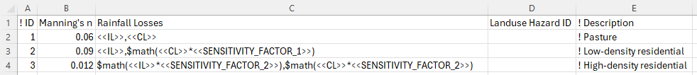
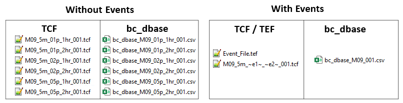

| Control File | Description | Section |
|---|---|---|
TCF |
The TUFLOW Control File (.tcf) file sets simulation parameters and directs input from other data sources. It is the top of the tree, with all input files accessed via the .tcf file or files referred to from the .tcf file. Each TUFLOW simulation must have a .tcf file. |
|
ECF |
The ESTRY Control File (.ecf) includes all of the 1D files and commands. 1D commands can also be embedded into the .tcf file should the modeller prefer. |
|
TBC |
The TUFLOW BoundaryControl File (.tbc) includes commands related to internal and external boundaries and linking of 1D/2D. |
|
TGC |
The TUFLOW GeometryControl File (.tgc) includes commands and geometric / topographic data inputs to build the 2D domain. |
|
QCF |
The Quadtree Control File (.qcf) includes the commands required to build a quadtree mesh. |
|
TEF |
The TUFLOW Event File (.tef) includes a database of .tcf and/or .ecf commands related to specific events. |
|
TOC |
The TUFLOW Operational Control File (.toc) includes operating rules that can be applied to hydraulic structures, pumps and other controllable devices modelled as 1D elements. |
|
TRFC |
The TUFLOW Rainfall Control File (.trfc) includes commands to generate rainfall grids based on point rainfall gauges. |
|
TESF |
The TUFLOW External Stress File (.tesf) includes commands to define time varying global or spatially varying external forces such as wind or wave radiation stresses. |
|
ADCF |
The Advection Dispersion Control File (.adcf) includes the commands required for AD model execution. |
|
TSCF |
The TUFLOW SWMM Control File contains the relevant commands needed to manage the SWMM simulation. |
|
Read File |
A TUFLOW Read File is a file included inside another file. Any file extension be used, with .trd traditionally used for 2D commands and .erd for 1D. Read files are useful for commands that are common to multiple simulations or for commands that are rarely or never changed and can be placed into another file to reduce the size of the parent file. Up to 9 levels of read files can be nested. |
|
Override File |
Override Files allow the user to apply .tcf commands after TUFLOW has finished processing the commands which are referenced within the .tcf file. |
4 Control Files and Input Layers
This chapter discusses TUFLOW model inputs, which include the TUFLOW Control Files (text-based, easy to script, input files) and GIS layers (.shp, .gpkg or .mif formatted files). The different control files will be discussed along with how different objects within the GIS layers are treated by TUFLOW.
4.1 Control Files
The TUFLOW Control files are text files containing a series of commands (instructions) that control how a model is constructed and how a simulation proceeds. They are easily scripted and interpreted, typically short in length, and very powerful for enabling efficient workflows.
This overview chapter discusses:
- Rules and notation in regards to control files (Section 4.1.1),
- Absolute and relative file paths (Section 4.1.2),
- The available units (e.g. Metric or Imperial) (Section 4.1.3), and
- The control files (Section 4.1.5 to Section 4.1.17).
Table 4.1 lists the available control files, provides a brief description and a link to the respective section of this Chapter that discusses the individual control file.
4.1.1 Rules and Notation
Control files, such as the TUFLOW Control File (TCF), TUFLOW Boundary Control (TBC) and TUFLOW Geometry Control (TGC), are command or keyword driven text or script files. The commands are entered free form, based on the rules described below. Comments may be entered at any line or after a command. The commands are listed in Appendix A to Appendix I.
TUFLOW control files and commands are NOT case sensitive.
However, keep in mind that file paths may be case sensitive depending on the operating system.
An example of a command is:
Start Time == 10 ! Simulation starts at 10:00am on 2/9/1962This command sets the simulation start time to 10 hours. The text to the right of the “!” is treated as a comment and not used by TUFLOW when interpreting the line.
Automatic colour coding (as shown in the above example) of files for easy interpretation is available, with download links and installation instructions, for the following text editors: Notepad++, UltraEdit and TextPad.
Commands can be repeated as often as needed. This offers significant flexibility and effectiveness when modelling, particularly in building 1D and 2D model topography. Note that a repeat occurrence of a command may override the effect of previous occurrence(s) of the same command.
The style of input is flexible bar a few rules. The rules are:
- A few characters are reserved for special purposes as described in Table 4.2;
- Command syntax is not case sensitive;
- Only one command can occur on a single line; and
- A few commands rely on another command being previously specified. These are documented where appropriate.
Additional text can be placed before and/or after a command. For example, a line containing the command Start Time to set the start time of a simulation to 10 hours can be written as:
Start Time == 10or
Start Time (h) == 10
The (h) text is not a requirement but is useful to indicate that the units are hours. Alternatively, the following would also be acceptable, noting the use of the comment delimiter “!”:
Start Time == 10 ! hoursBlank lines are ignored. Spaces or indentations can occur at the start of the line. This is recommended when using the logic control, as outlined in Section 13.2. The second line in the following example is not required to be indented, however, it is strongly recommended to facilitate easy interpretation:
If Scenario == GPU
GPU Solver == ON
End IfThe notation used to document commands and valid parameter values in Appendix A to Appendix I are presented in Table 4.3.
| Reserved Character(s) | Description |
|---|---|
“#” or “!” |
A “#” or “!” causes the rest of the line from that point on to be ignored. Useful for “commenting-out” unwanted commands, and for all that modelling documentation. |
== |
A “==” following a command indicates the start of the parameter(s) for the command. Where there is more than one parameter, the parameter values are read as free-field formatted, i.e. are space or comma delimited. When processing command line syntax within the control files (.tcf, .tgc, .ecf etc.), if a “==” is not present in the command line syntax TUFLOW will produce an ERROR 0060. For example “If Scenario = Exg” will produce an error as the correct syntax is “If Scenario == Exg”. |
| Documentation Notation | Description |
|---|---|
< … > |
Greater than and less than symbols are used to indicate a variable parameter. For example, the commonly used <file> example is described below. |
<file> |
A filename (can include an absolute or relative path, or a UNC path). See Section 4.1.2 for a more detailed description. |
[ {Op1} | Op2 ] |
The square brackets “[” and “]” surround parameter options. The “|” symbol separates the options. The “{” and “}” brackets indicate the default option. This option is applied if the command is not used. For example, the options for the Maximums and Minimums command are: [ ON | {ON MAXIMUMS ONLY} | OFF ] Where the default is ON MAXIMUMS ONLY (which stores the maximums, but not the minimums). |
spaces |
Spaces can occur in commands and parameter options. If a space occurs in a command, it is only one (1) space, not two or more spaces in succession. Spaces can occur in file and path names; however, third party software may not allow this and as such is not recommended. If using spaces in filenames, batch files will require that the filename is enclosed in quotes. |
4.1.2 File Paths
TUFLOW control files reference additional files, for example GIS files. The three methods that can be used are absolute file path, relative file path and UNC file path referencing. A model can use any or all these methods. However, relative file paths are typically preferred.
Depending on the operating system, file paths may be case sensitive.
Take an example of reading a GIS layer containing initial water levels, the command is Read GIS IWL == <filepath>. The following are all valid:
- Absolute file path: Read GIS IWL == L:\Job\Job1234\TUFLOW\model\gis\2d_IWL_001_R.shp
- Relative file path: Read GIS IWL == ..\model\gis\2d_IWL_001_R.shp
- UNC file path: Read GIS IWL == \server1\Job1234\TUFLOW\model\gis\2d_IWL_001_R.shp
For the relative file path, the path is relative to the file that is referring to it. In the case above, if the command occurred in the .tcf file, which is in the TUFLOW\runs\ folder, the ..\ indicates to go up one level (from TUFLOW\runs\ to TUFLOW\ the model\ navigates into the TUFLOW\model\ folder, gis\ navigates from TUFLOW\model\ into TUFLOW\model\gis\). To go up more than one level simply use ..\ multiple times (e.g. ..\..\ would navigate up two folders). If the file sits under the same folder, then the filename can be specified. In the below example the Model_Events.tef would need to sit in the same location as the .tcf.
Event File == Model_Events.tefThe paths are relative to the current control file, a command in the geometry control file (TUFLOW\model\) would be relative to the .tgc location, not the .tcf location.
Using relative file paths has the advantage that the model can be moved or provided to another user and the control files do not need to be updated, if the model uses an absolute or UNC file path, all references will need to be updated if the model is moved.
Some large files may still use an absolute or UNC file path particularly where large datasets are shared across models. This avoids the need to copy the dataset into multiple projects. An example is:
Read GIS IWL == \server1\share\Lidar\East_Coast_5m.fltIf using LINUX at any point during the modelling tasks or pre/post processing, it is recommended to set Use Forward Slash == ON.
4.1.3 Units
The default unit settings for all inputs in a TUFLOW model are metric, however, it is possible to create models using US Customary units (also known as Imperial or English units) by specifying the .tcf command Units == US Customary. “Imperial” or “English” are also accepted and are treated identically.
This manual uses the metric term for documentation purposes. If your model uses US Customary Units any user defined values must also be specified in US Customary units. The metric unit and the equivalent US Customary unit are listed in Table 4.4, unless otherwise stated within this Manual. Model units can be checked by searching for the relevant parameter in the .tlf file (refer to Section 14.3).
Output units are listed in Table 11.4.
An example model using the Units == US Customary functionality is provided in the Model Units Example Model Dataset on the TUFLOW Wiki.
| Metric | US Customary |
|---|---|
m |
ft |
mm |
inches |
km\(^2\) |
miles\(^2\) |
kg |
pound |
4.1.4 Mathematical Operations
From the 2025.2.0 release onwards, mathematical operations are supported in TUFLOW control (.tcf, .ecf, .tbc, etc), material and soil (.tsoilf) files. These operations are included using $math(), which can be used with direct values or combined with variables (see Section 13.2.3). An external library (ExprTk) is used to parse and evaluate the mathematical syntax. This library supports a wide range of mathematical operations and functions such as sqrt() and log(). For further information on please refer to ExprTk Library documentation.
Mathematical operations must be read and evaluated at the start of the simulation and are not re-evaluated during the simulation. As such, $math() cannot be used in commands that rely on values that change throughout the simulation. Examples below:
Example 1: Unit conversion
Pump Capacity == $math(500/1000) ! Converts 500 L/s to 0.5 m^3/sExample 2: Using variables
If one or more variables are defined in the .tcf (see Section 13.2.3), they can then be adjusted (in the .tcf or in other files) using $math(). In the example below, mathematical operations are used to procedurally set the model end time and map output interval based on the storm duration:
Event File == EG11_004.tef ! Read this before setting END_TIME so that the <<DUR>> variable is populated
! Variables
Set Variable OUT_COUNT == 60 ! (count) target number of output timesteps
Set Variable OUT_RND == 900 ! (sec) round the output interval to an interval of this value
Set Variable HR_2_SEC == 3600 ! Conversion factor (hours to seconds)
! Set the end time to 50% longer than the storm duration (DUR variable is set in the TEF)
Set Variable END_TIME == $math(<<DUR>>*1.5)
! Set the map output interval by dividing END_TIME by the OUT_COUNT and rounding it to the nearest 15mins
Set Variable MAP_OUTPUT_INTERVAL == $math(<<OUT_RND>>*round(<<END_TIME>>*<<HR_2_SEC>>/<<OUT_COUNT>>/<<OUT_RND>>))
! Time Control
Timestep == 1
Start Time == 0
End Time == <<END_TIME>>
! Output Settings
Map Output Format == XMDF
Map Output Data Types == h V d
Map Output Interval == <<MAP_OUTPUT_INTERVAL>> Example 3: Adjusting event variables
Event variables can be adjusted using $math():
Define Event == 120
BC Event Source == _event2_ | 2hr
End Define
End Time == $math(<<~e2~>>/60+1) ! Convert to hours plus 1. Expression = 120/60 + 1 = 3Example 4: ARR losses
If ARR data provides Initial Loss (IL) and Continuing Loss (CL) values directly, but scaled losses are required for certain land uses (e.g. 50% impervious for low-density residential), multipliers can be applied directly or using a variable.
In the .tcf, set sensitivity factors for different land uses:
Set Variable SENSITIVITY_FACTOR_1 == 0.5 ! Sensitivity factor for low-density residential
Set Variable SENSITIVITY_FACTOR_2 == 0.8 ! Sensitivity factor for high-density residentialIn the materials file:

Example 5: Logic control
$math() can be used in logic control blocks:
If t >= $math(60/60) and t <= $math(90/60)
Pump Operation == ON ! Set the pump to ON
Else
Pump Operation == OFF ! Set the pump to OFF
End IfExample 6: Invalid use case
The following .toc file commands are invalid and will result in an error as Trigger1 and Trigger2 are updated at each timestep, so the mathematical operation is also updated at each timestep.
Trigger1 == HU ! Set 'Trigger1' to monitor 1D water level at the upstream node
Trigger2 == HD ! Set 'Trigger2' to monitor 1D water level at the downstream node
If $math(Trigger1*1.1) >= 40 and Trigger2 <= 43.5 ! Invalid logic control using $math()
Pump Operation == ON ! Set the pump to ON
Else
Pump Operation == OFF ! Set the pump to OFF
End If4.1.5 TCF - TUFLOW Control File
The TUFLOW Control File (.tcf) file sets simulation parameters and directs input from other data sources. It is the top of the tree, with all input files accessed via the .tcf file or files referred to from the .tcf file. Each TUFLOW simulation must have a .tcf file. An example of a simple .tcf file is shown below.
Appendix A lists and describes .tcf commands and their parameters.
The .tcf file must reference the following items as a minimum requirement (TUFLOW won’t run without them):
- Geometry Control File (Section 4.1.8)
- BC Control File (Section 4.1.7)
- Start Time
- End Time
- Map Output Interval
Recommended or most commonly used .tcf commands are:
- Read Materials File
- BC Database
- Solution Scheme
- ESTRY Control File (Section 4.1.6)
- Quadtree Control File (Section 4.1.9)
- SHP Projection/GPKG Projection/MI Projection
- Timestep
- Output Folder
- Map Output Data Types
- Time Series Output Interval
- Write Check Files
- Write Empty GIS Files
Commonly used or useful .tcf commands are: BC Event Source, Event File, Read File, Cell Wet/Dry Depth, Instability Water Level, Read GIS FC, Read GIS IWL, Read GIS PO, Screen/Log Display Interval, Set IWL, Start Map Output, Start Time Series Output.
! Example TUFLOW CONTROL FILE (.TCF)
! Comments are shown after a "!" character.
! Blank lines are ignored and commands are not case sensitive.
! MODEL INITIALISATION
SHP Projection == ..\model\gis\projection.prj ! Set the GIS projection for the TUFLOW Model
! MODEL INPUTS
Geometry Control File == ..\model\example_001.tgc ! Reference the TUFLOW Geometry Control File
BC Control File == ..\model\example_001.tbc ! Reference the TUFLOW Boundary Control File
BC Database == ..\bc_dbase\bc_dbase.csv ! Reference the Boundary Conditions Database
Read Materials File == ..\model\materials.csv ! Reference the Materials Definition File
! TIME CONTROL
Timestep == 1 ! Specifies the first 2D computational timestep of 1 second
Start Time == 0 ! Specifies a simulation start time of 0 hours
End Time == 3 ! Specifies a simulation end time of 3 hours
! OUTPUT SETTINGS
Map Output Interval == 300 ! Outputs map data every 300 seconds (5 minutes)It is possible to incorporate 1D (.ecf - Section 4.1.6) commands into the .tcf file in two ways:
- Within Start 1D Domain, End 1D Domain block(s)
- By prefixing the 1D command with “1D”. For example, 1D Manhole Default Type
In the .tef file (Section 4.1.10), 1D commands can be included in the same manner: within a Start 1D Domain block or prefixed with “1D”.
4.1.6 ECF - ESTRY Control File
Commands specific to TUFLOW (ESTRY) 1D domains are detailed in Appendix B, and can be placed either in the .tcf file (or in a Read File), or in their own file traditionally called an .ecf file. 1D commands can be located:
- Within an .ecf file and referenced within the .tcf file using the command ESTRY Control File. The command ESTRY Control File Auto can be used to force the .ecf file to have the same name as the .tcf file.
- Placed within a 1D domain block in the .tcf using Start 1D Domain and End 1D Domain commands.
- Placed anywhere in the .tcf file and preceded by “1D”, for example, 1D Manhole Default Type. “1D” must be the first two characters.
- Any combination of the above, however, it is strongly recommended in the interests of manageability that a logical approach be adopted.
The .ecf file method is typically used if the 1D domain is large and complex, whereas the 1D domain block or preceding “1D” may be used where the 1D/2D linked model requires only a few 1D commands or they are placed in another file and referenced using Read File.
The 1D commands set simulation parameters and directs input from other data sources for all 1D domains. An example of some 1D commands are shown below.
! Example TUFLOW ESTRY CONTROL FILE (.ECF)
! 1D TIME CONTROL
Timestep == 0.5 ! Specifies a 1D computational timestep of 0.5 seconds
! 1D ELEMENTS
Read GIS Network == gis\1d_nwk_pipes_001_L.shp ! Reads the 1d_nwk GIS layer defining pipes
Read GIS Manholes == gis\1d_mh_manholes_001_P.shp ! Reads the 1d_nwk GIS layer defining pipes
Read GIS BC == gis\1d_bc_example_001_R.shp ! GIS layer defining 1D boundary conditionsAppendix B lists and describes the 1D commands and their parameters. Commands that are only relevant for 1D only models are indicated with a “1D Only” underneath the command in Appendix B.
At present it is not an option to truly have a 1D only model. For 1D only models, a single 2D model, which can be made up of a single inactive 2D cell, is still required. See Section 13.4.4.
4.1.7 TBC - TUFLOW Boundary Control File
The TUFLOW Boundary Control (.tbc) file contains information regarding the location and type of boundaries within the model. These include (but are not limited to) upstream and downstream boundaries as well as 1D/2D or 2D/2D links. The GIS layers read into the .tbc file reference the Boundary Condition (BC) Database (see Section 8.5). The BC Database associates the GIS layers with a boundary condition such as a hydrograph or a depth-discharge curve.
Only one .tbc file per 2D domain can be specified in the .tcf file using the BC Control File command. A .tbc file must be specified, if no external boundaries are to be applied a blank file may be specified. This is rarely done but can be used for models based only on initial water levels.
Appendix D lists and describes .tbc commands and their parameters.
4.1.8 TGC - TUFLOW Geometry Control File
2D domains are defined through a series of commands contained in TUFLOW Geometry Control (.tgc) files. The .tgc file contains, or accesses from other files, information on the size and orientation of the grid, grid cell codes (whether cells are active or inactive), bed/ground elevations, bed material type or flow resistance value, and optional data such as soil type.
A 2D domain is automatically generated as a grid of square cells. Each cell is given characteristics relating to the topography such as ground/bathymetry elevation, bed resistance value and initial water level, etc.
A .tgc file is specified in the .tcf file using Geometry Control File. For a TUFLOW Classic Multiple 2D Domain model, a separate .tgc file is required for each of the 2D domains, see Section 10.7.2.
Rather than contain all the 2D grid information in one file, the .tgc file is a series of commands that builds the model. The commands are applied in sequential order. It is possible to override previous information with new data to modify the model in selected areas. This is extremely useful where a base dataset exists, over which areas need to be modified to represent other scenarios such as a proposed development. This eliminates or minimises data duplication.
The commands can occur in any order (as long as it is a logical one).
If an unrecognisable command occurs, TUFLOW stops and displays the unrecognisable text.
- Commands can be repeated any number of times.
- Commands are executed in the order they occur. If the data for a 2D cell or Zpt is supplied more than once, the last data that is read is used (i.e. the latter data for a cell overrides any previous data for that cell).
- Each data layer does not have to cover the entire model – only the 2D cells influenced by the objects in the layer (e.g. a 3D breakline) are affected.
- Use Write Check Files commands to cross-check and carry out quality control checks on the final 2D grid, elevations, material or land-use categories, etc.
An example of a .tgc file is shown below:
! Example GEOMETRY CONTROL FILE (.TGC)
! 2D DOMAIN
Origin == 292725, 6177615 ! Bottom left corner (origin) of the 2D grid
Orientation == 293580, 6177415 ! Point along the X-axis determining the orientation of the 2D grid
Cell Size == 5 ! 2D cell size in metres
Grid Size (X,Y) == 850, 1000 ! 2D grid extent dimensions in metres
! MODEL GRID
Set Code == 0 ! Sets all cells to inactive
Read GIS Code == gis\2d_code_M01_001_R.shp ! Sets cell codes according to attributes in the GIS layer
! TOPOGRAPHY
Set Zpts == 100 ! Sets every 2D elevation zpt to 100 metres
Read GRID Zpts == grid\DEM.tif ! Assigns the elevation of zpts from the grid
! MATERIALS
Set Mat == 1 ! Sets all cells to a material ID of 1
Read GIS Mat == gis\2d_mat_M01_001_R.shp ! Sets material values according to attributes in the GIS layerAppendix C lists and describes .tgc commands and their parameters.
4.1.9 QCF - Quadtree Control File
For a quadtree grid, the Quadtree Control File (.qcf) is used to define the grid refinement areas and optionally the model location and extent, see Section 7.3.1. A .qcf file is specified in the .tcf file using the Quadtree Control File command. Examples using quadtree control files are provided in TUFLOW Tutorial Module 7 and in the Multiple Domain Model Design Example Model Dataset.
Further information about the .qcf is provided in Section 7.3.1.2.
Appendix H lists and describes .qcf commands and their parameters.
4.1.10 TEF - TUFLOW Event File
The TUFLOW Event File (.tef) contains a database of .tcf (Section 4.1.5) and .ecf (Section 4.1.6) file commands for different events. A .tef file is specified in the .tcf file using the Event File command.
Events are defined using Define Event blocks. Commands that may vary by event are placed within these blocks. Typically these commands define event magnitudes and durations, or simulation management settings such as End Time and output locations. For example:
Define Event == 05AEP
BC Event Source == ~AEP~ | 05AEP
End Time == 3
Output Folder == ..\results\2d\05AEP
End DefineCommands that apply to all events in the .tef are defined outside the Define Event blocks, typically at the top of the .tef file. These global commands apply to all events, unless explicitly overridden within an event definition. For example:
Start Time == 0 ! Global value, unless specified below
Define Event == 05AEP
BC Event Source == ~AEP~ | 05AEP
End DefineWhen referenced in a .tcf (via the Event File command), the .tef is processed at the location it is defined. As a result, it is recommended to have this command as the last line of the .tcf file. Placing it in this location ensures it will be the final .tcf command that is read, and any global .tcf or .ecf commands within it will take precedence over conflicting commands in the parent .tcf and .ecf files.
Event management is a powerful functionality that allows running multiple event combinations (e.g. magnitude, duration, temporal patterns, climate change) using a single set of control files rather than creating a new set for every simulation. This makes the management of the model easier, ensures consistency between the simulations, and is considered better modelling practice from a quality control perspective. An example of the number of .tcf and bc_database files required for a model with and without event management is shown in Figure 4.2.

The .tef file generally lists all available events and can therefore function as a database of all event options. This is useful for model peer review purposes.
Detailed guidance on event grouping, event selection and bulk execution of simulations is provided in Section 13.2.1.
Models using events are provided in the TUFLOW Tutorial Module 9 and the Bulk Simulation Management Example Model Dataset on the TUFLOW Wiki.
4.1.11 TOC - TUFLOW Operations Control File
The TUFLOW Operations Control (.toc) contains operating rules for structures. A .toc file is specified in the .ecf file using the Read Operating Controls File command, or in the .tcf file within a Start 1D Domain block. Operational Channels are detailed in Section 5.9. An example of its use is provided in TUFLOW Tutorial Module 10 Part 3.
Appendix E lists and describes .toc commands and their parameters.
4.1.12 TRFC - TUFLOW Rainfall Control File
The TUFLOW Rainfall Control File (.trfc) contains commands used to generate rainfall grids based on point rainfall gauges. This approach generates a series of rainfall grids available to the user for display or checking. A .trfc file is specified in the .tcf using the Rainfall Control File command. An example of its use is provided in TUFLOW Tutorial Module 6 Part 3.
Further information about the .trfc is provided in Section 8.4.3.1.4.
Appendix F lists and describes .trfc commands and their parameters.
4.1.13 TESF - TUFLOW External Stress File
The External Stress File (.tesf) allows the definition of time varying global or spatially varying external forcing such as wind or wave radiation stresses. A .tesf file is specified in the .tcf using the External Stress File command. External stress boundaries are discussed in Section 8.7.
Appendix G lists and describes .tesf commands and their parameters.
4.1.14 ADCF - Advection Dispersion Control File
The Advection Dispersion Control File contains commands related to the TUFLOW Advection Dispersion (AD) Module for simulating depth-averaged, constituent fate and transport. The .adcf is specified in the .tcf using the AD Control File command. The Advection Dispersion module is discussed in Chapter 9.
Appendix J lists and describes .adcf commands and their parameters.
4.1.15 TSCF - TUFLOW SWMM Control File
TUFLOW 2D domains can be dynamically linked to SWMM’s 1D solution scheme. The TUFLOW SWMM Control File (.tscf) contains the SWMM input commands. The .tscf file is specified in the .tcf using the SWMM Control File command. Section 10.4 provides information on linking to the 1D scheme, and examples are given in the TUFLOW-SWMM Tutorial Modules.
Appendix I lists and describes .tscf commands and their parameters.
4.1.16 Read File
The Read File command is extremely useful for placing commands that remain unchanged or are common for a group of simulations in another file (e.g. the SHP Projection command will be the same for all runs within the same study area). This reduces the size/clutter of .tcf files and allows easy global changes to a group of simulations to be made.
The file extensions most commonly used are .trd (2D commands), .erd (ESTRY 1D commands) and .rdf.
4.1.17 Override Files
These optional override files allow the user to apply .tcf commands after TUFLOW has finished processing the commands referenced within the .tcf file. This can be useful where you wish to change a parameter for all simulations that are started from a common folder. For example, you could turn off check files, or change the output drive.
Two override file types are possible, one which is computer specific and one which is processed by all computers. If either or both are present, they are processed after all the .tcf file commands have been processed so that the override commands prevail.
The first override file that TUFLOW checks for is named “_TUFLOW_Override.tcf”. If this file exists within the same folder as the .tcf file, .tcf commands that are listed within the “_TUFLOW_Override.tcf” file overwrite the commands in the .tcf file.
The second one TUFLOW looks for must be named “_TUFLOW_Override_<computer_name>.tcf”, where <computer_name> is the name of the computer running the simulation. If this file exists TUFLOW will process any commands within it after any commands from the “_TUFLOW_Override.tcf” file (if it exists). If you are unsure of your computer name, this is displayed in the computer’s properties or in a TUFLOW Log File (.tlf) that has been processed on that computer, this is typically at the top of the .tlf (line 6). For example:
Computer Name: COMP1234
With the computer name above the computer specific override file would be named “_TUFLOW_Override_COMP1234.tcf”.
An override file specific to a particular computer can be particularly useful where, for example, different output drives or results folders, are to be used for runs using different computers. This will allow you to run TUFLOW simulations on different computers without having to change the .tcf file.
For example, if a run is started on one machine that only has a C drive, output can be directed to the C drive just for that computer by using the command Output Drive == C.
Another example is if using the GPU solver and one machine only has a single GPU, while another has four GPUs. The command GPU Device IDs == 0, 1, 2, 3 can be specified in the override file specific to the machine with four GPUs.
Nearly all .tcf commands can be placed within the override files except for “Read GIS” and some other similar commands that involve processing of data layers. It is recommended that the override files are only used for global changes to settings, similar to the examples above.
4.2 Databases
Databases are organised collections of structured data in comma delimited (.csv) or text based formats that can be read into TUFLOW Control files. Table 4.1 lists the available databases, provides a brief description and a link to the respective section that discusses the specific database.
| Database | Description | Section |
|---|---|---|
bc_dbase |
The boundary condition (BC) database can be in either .csv (comma delimited) format, or HEC-DSS (see Section 8.5.4). It must contain a row with the pre-defined keywords ‘Name’ and ‘Source’, as listed in Table 8.13. Other keywords control how data is extracted from the source. |
|
materials |
The materials database can be in either a text based format (.tmf) or comma delimited format (.csv). It contains the Manning’s n value and other information for different materials (e.g. land-uses). The format of the materials .tmf file is described in Table 7.15. The format of the materials .csv file is described in Table 7.14. |
|
pit_dbase |
For pit channels specified as a Q Type, the flow through the pit is controlled by a depth-discharge curve defined within the Pit Inlet Database. The database file sources depth-discharge curves in other .csv files. The format of the Pit Inlet Database is described in Table 5.27. |
|
soils |
Soils infiltration is applied to the model by defining a soils (.tsoilf) file which is read into the .tcf using the command Read Soils File. An integer ID to each soil, define the infiltration method followed by the soil parameters as the remaining values. Table 7.17 presents the parameters of the .tsoilf file available for TUFLOW Classic, the additional options available for TUFLOW HPC are presented in Table 7.30. |
4.3 Input Layers
4.3.1 Input Formats
The main types of GIS Inputs are vectors, rasters and TINs. The following formats are supported as inputs in TUFLOW:
- GIS vector data layers: GeoPackage (.gpkg) (recommended), Shapefile (.shp) and MapInfo (.mif) (default) formats.
- GIS raster data layers: GeoTIFF (.tif) (recommended & default), GeoPackage (.gpkg), Float (.flt) and ASCII (.asc) formats. NetCDF formats are supported for some inputs such as time-varying rainfall grids.
- GIS TIN data layers: Land XML (.xml), 12d tin (.12da) formats (including super TINs) and SMS (.tin).
Most mainstream CAD/GIS platforms recognise these formats.
The format of input layers is solely controlled by the file extension. For example, for the vector formats, “.gpkg” for the GPKG format database (noting that no extension is used for a layer within a database), “.shp” for the SHP format and “.mif” for the MIF format. Prior to the 2023-03 release, if no file extension was specified TUFLOW assumed the input layer was in .mif format. To support the new GeoPackage format (the recommended vector format), TUFLOW will produce ERROR 0631 for inputs with no extension.
TUFLOW requires that all GIS layers imported or exported by TUFLOW must be in the same geographic projection. The model projection is initialised using the GPKG Projection, SHP Projection and MI Projection commands. Multiple input formats can be used (e.g. a mix of all format types within one model is allowed). If a model uses a mixture of format types as inputs, a projection command should be specified for each format.
The default output format for GIS check layers and GIS outputs depends on the Projection setting as mentioned above. If more than one Projection setting is specified, or to force the GIS output format, use the GIS Format command. The GeoPackage format is that recommended due to superior file/data management storage, data compression, and far greater viewing and querying speeds.
The default raster format is the GeoTIFF (.tif) format. Although a check is not done on the projection of .tif inputs, a projection can be assigned to .tif output rasters using the TIF Projection command.
4.3.2 GIS Commands
Commands containing “GIS” read and/or write a GIS vector layer. GIS commands read the geometry, attribute data, and projection data of the input layer. The available formats of input vector and raster layers are listed in Section 4.3.1. The geographic location of objects for GIS commands is important as the geographic position of the object controls the part of the TUFLOW model they affect.
When digitising objects, it is preferable that they do not snap to the 2D cell sides or corners as this may produce indeterminate effects.
4.3.2.1 GIS Attribute Interpretation
TUFLOW expects certain attributes, in a specific order for input layers. For example an initial water level layer (2d_iwl) layer only requires a single attribute (which is the initial water level value), whilst a 1d channel layer (1d_nwk) has a number of attributes including channel type, channel roughness, upstream and downstream elevation. The attributes required for each input layer are detailed in their respective sections throughout this manual. Any additional attributes appended to the layer will be ignored by TUFLOW (with the exception of the 1d_nwk layer as TUFLOW will treat it as a 1d_nwke layer).
The .tcf command Write Empty GIS Files can be used to automate the creation of template files with attribute structures that TUFLOW expects and with the recommended GIS data naming convention. They also can be automatically created using the TUFLOW Plugin Import Empty Tool.
A list of the TUFLOW template files is available on the TUFLOW Wiki TUFLOW Empty Files.
The names of GIS attributes as documented or produced by Write Empty GIS Files may change from previous TUFLOW releases to reflect new features and changes. The name of the attribute is irrelevant as far as TUFLOW is concerned as TUFLOW only requires that attributes are in the correct order and of the correct type (i.e. Character, Float, Integer, etc.). In all TUFLOW layers, the attributes can be named as the modeller wishes, so older layers that do not have the same attribute names as documented in this manual will still work correctly.
4.3.2.2 GIS Object Interpretation
Table 4.6 and Table 4.7 outline the compatible GIS objects and how they are interpreted by TUFLOW.
Object snapping is often used to relate point data with line and region data, for example with the Read GIS Z Shape or Read GIS BC command. TUFLOW supports point, end and vertex snapping. It does not support edge snapping. Objects that are linked (for example a 2d_bc “SX” type region and 2d_bc “CN” type line layer), must be snapped and also read in to TUFLOW on the same command line separated by a vertical bar “|”. For example:
Read GIS BC == 2d_bc_culvert_R.shp | 2d_bc_culvert_L.shp| Object Type | TUFLOW Interpretation |
|---|---|
Point |
Refers to the 2D cell that the point falls within or a 1D object such as a node or boundary location. Points snapped to the sides or corners of a 2D cell may give uncertain outcomes as to which cell the point refers to. |
Line (straight line) |
Variety of uses including defining a continuous line of 2D cells, 1D channels, to connect objects, alignment of a 3D breakline, linking 1D and 2D elements. |
Pline (line with one or more segments) |
As for Line above. |
Region (polygon) |
For 2D cells either:
For 1D: 1D nodes within the region are selected. If the 1D node falls exactly on the region perimeter uncertain outcomes may occur. |
Multiple (Combined) Objects |
In later versions of TUFLOW, multiple point, line and region objects are generally accepted (ERROR or WARNING messages are given if not the case). |
| Object Type | TUFLOW Interpretation |
|---|---|
Arc |
Ignored (do not use). |
Collections |
Not supported. Collections are groups of objects of differing type. |
Ellipse |
Ignored (do not use). |
none |
These objects are ignored and most commonly occur when a line of attribute data is added that is not associated with an object. In MapInfo, this occurs when a line of data is added directly to a Browser Window (i.e. no object was digitised). |
Roundrect (Rounded Rectangle) |
Ignored (do not use). |
Rect (Rectangle) |
Ignored (do not use). |
Text |
Ignored. |
4.3.3 GeoPackage Commands
GeoPackage is a widely supported, open format, built upon an SQLite database (this is stored as a single file with the extension .gpkg). The benefits of GeoPackage compared to the MapInfo (MIF/MID) and ESRI/QGIS Shapefile formats include:
- More than one layer can be stored in a single file. For example, all model inputs can be stored in a single GeoPackage database.
- It supports spatial indexing, making it much faster to work with in GIS packages.
- Significantly faster write speed from TUFLOW compared to the Shapefile format.
For tips on using GeoPackages, see the TUFLOW Wiki GeoPackage Tips page. Additionally, the TUFLOW Tutorial Modules are set up using the GeoPackage format and can be used as an introduction to using GeoPackages.
4.3.3.1 GPKG Input Commands
Since a GeoPackage database can have more than one layer, when reading data into TUFLOW, a GeoPackage file and table may both need to be specified. There are a variety of different options available. The following are possible:
To specify a table in a .gpkg directly use “>>”:
Read GIS Z Shape == gis\2d_zsh.gpkg >> 2d_zsh_LIf a .gpkg file path is only specified, with no table reference, it will be assumed that the table name is the same as the .gpkg database name. For example, the following two commands are equivalent to one another:
Read GIS Z Shape == gis\2d_zsh_L.gpkg Read GIS Z Shape == gis\2d_zsh_L.gpkg >> 2d_zsh_LTo specify more than one table in a database in the same command line use “&&”. This is similar to “|” however there is no need to reference the database multiple times:
Read GIS Z Shape == gis\2d_zsh.gpkg >> 2d_zsh_L && 2d_zsh_P“&&” can be used in conjunction with “|”:
Read GIS Z Shape == gis\2d_zsh_R.gpkg | gis\2d_zsh.gpkg >> 2d_zsh_L && 2d_zsh_PUse the command “USE ALL” with “>>” to tell TUFLOW to use all tables in the database:
Read GIS Z Shape == gis\2d_zsh.gpkg >> USE ALLUse the Spatial Database command to specify a database to use for subsequent table inputs. This command can be used multiple times in a control file to change the target .gpkg file. For example:
Spatial Database == gis\2d_EXG.gpkg Read GIS Z Shape == 2d_zsh_R | 2d_zsh_L | 2d_zsh_P Read GIS Mat == 2d_mat_R Spatial Database == gis\2d_DEV.gpkg Read GIS Mat == 2d_mat_RSpatial Database can be used in the .tcf, .ecf, .tbc, .tgc, .qcf, .tef. Commands are localised to their relevant control file with the exception of the .tcf which acts as a global command. If local spatial database are specified, they will take precedence over the global .tcf spatial database. The spatial database can be turned off or reverted to the .tcf database with the same command. Turning the spatial database off is a global command even when used in a control file other than the .tcf.
Spatial Database == OFF | TCFPrior to TUFLOW’s implementation of GeoPackage, if a file reference did not have an extension listed in the TUFLOW command syntax it was assumed the file was a MapInfo “mif” format. That rule no longer applies. If there is an open spatial database TUFLOW will not append “.mif” to the end of the table name.
4.3.3.2 GPKG Output Commands
The GIS outputs from TUFLOW can be set to GPKG by using the following command:
GIS Format == GPKG
Outputs can be written into separate databases or grouped:
Spatial Database Output == SEPARATE | {GROUPED}
Grouped databases will group by output folder location. Separate databases will still group geometries together e.g., PLOT_P, PLOT_L, PLOT_R will be written to one database.
4.3.4 Grid Commands
Commands containing “Grid” read and/or write a GIS raster layer. The format is controlled by the file extension (e.g. .tif, .gpkg, .flt or .asc). The available formats of input raster layers are listed in Section 4.3.1.
For real (float) inputs the value is interpolated from the grid. For integer inputs (such as Code), the value applied is the integer value of the grid cell that the TUFLOW point falls within.
The Read Grid Zpts command permits a second argument to specify a GIS layer containing one or more polygons to clip the area of Zpts to be inspected. Elevations will only be assigned to Zpts lying inside polygons within the GIS layer. See Section 7.2.6.1 for more details.
4.3.4.1 Geospatial Data Abstraction Library (GDAL)
The 2026.0.0 TUFLOW release introduced the option to use the popular open-source GDAL Library to read and write some GRID (raster) formats.
One of the drivers for adding GDAL support was to enable TUFLOW to read additional raster formats, particularly GeoTIFF files that previously could not be read, such as tiled rasters or those using specific compression options.
The following command will make GDAL available for use in TUFLOW. If this command is not activated, TUFLOW will use its native raster handling functionality.
Use GDAL == ON | {OFF}
After activating GDAL, it will automatically be utilised in certain contexts when reading or writing raster files using the existing “GRID” commands (Section 4.3.4).
For writing rasters, GDAL is only used for the GeoPackage, GeoTIFF, and Compressed GeoTIFF (COG) formats. Writing any other raster format will use TUFLOW’s native raster handling functionality.
For reading rasters, GDAL will be used except for some of the previously supported formats such as NetCDF. GDAL has been tested with the following formats:
- GeoTIFF - including tiled tiffs not supported previously
- GeoPackage (GPKG)
- GRIB (GRIdded Binary)
- Zarr
When writing rasters using GDAL, the projection can be specified using the TIF Projection command. When GDAL is enabled (Use GDAL == ON), the projection may be specified as a filename, or using any of the input formats supported by GDAL’s OGRSpatialReference::SetFromUserInput() function (e.g. EPSG codes). Refer to the GDAL Documentation for a list of all available options.
TIF Projection == /path/to/geotiff | <GDAL_option>
As an example, the following command can be used to set the TIF projection for the TUFLOW tutorial model:
TIF Projection == EPSG:32760When TUFLOW reads a raster, it uses the GDAL functionality to extract the area needed at the required resolution. The resolution required is the SGS sample spacing for SGS models or half the cell size for non-SGS models. This functionality is based on GDAL’s “virtual rasters.” Leveraging this approach allows even massive rasters to be read quickly without additional memory overhead saving both time and memory. When using this approach, it is unnecessary to clip a source raster to speed up runtime or to decrease memory usage.
When reading rasters using the “Use GDAL == ON” approach, the values extracted will not precisely match the values when not using GDAL or previous versions of TUFLOW. For existing models that did not use this approach, it is recommended to leave GDAL off (the default) to avoid modifying values.
The GDAL virtual raster approach provides several resample approaches that can be utilised from TUFLOW. The GDAL Warp Documentation includes descriptions of the different resampling methods.
For data that is applied as float values that are interpolated such as elevations, the options available are shown in the command below. Care should be taken when selecting an option other than bilinear (the default), nearest, average, or med(ian). Several of the options use a curve fitting style algorithm that can create artificially high or low elevations including cubic, cubicspline and lanczos. While the remaining options (max, min, q1, and q3), won’t generate artificial extremes, they are unlikely to be useful when modelling.
GDAL VRT Resample Approach Float == bilinear | nearest | cubic | cubicspline | lanczos | average | max | min | med | q1 | q3
For data that is applied as integers such as materials or soil IDs, the only options are nearest and mode. mode uses the most common value for the area sampled and may give a better representation than nearest which may capture a value that applies to a very small subset of the area. Note: Even though the data is applied as integers, TUFLOW currently only reads float rasters.
GDAL VRT Resample Approach Integer == nearest | mode
GDAL supports format specific configuration options that control settings such as compression, tiling and storage behaviour. These options apply only when rasters are written using GDAL (Use GDAL == ON). The following command can be used to specify creation options for a particular raster format. If TUFLOW writes outputs in multiple raster formats, the command may be used multiple times (one for each format).
GDAL Raster Create Options == <raster_format> | <creation_options>
The example below sets the output format to GTIFF (GeoTIFF) and applies ZSTD compression, enables tiling, uses all available CPU threads for writing and applies a floating point predictor.
GDAL Raster Create Options == GTIFF | COMPRESS=ZSTD;TILED=YES;NUM_THREADS=ALL_CPUS;PREDICTOR=34.3.5 TIN Commands
Commands containing “TIN” (triangulation file) read and/or write a TIN file. The format is controlled by the file extension (e.g. .tin, .xml or .12da). From the 2020-10-AB release, TUFLOW also supports super TINs in the .12da format. The same syntax is used for “TIN” layers as “GRID”.
TUFLOW can also be used to create a TIN (see Create TIN Zpts).
The Read TIN Zpts command permits a second argument, specifying a GIS layer containing one or more polygons to clip the area of Zpts to be inspected. Elevations will only be assigned to Zpts lying inside polygons within the GIS layer. See Section 7.2.6.1 for more details.
4.3.6 RowCol Commands (Legacy)
Commands containing “RowCol” or “MID” (e.g. Read RowCol Zpts) only read the attribute data file (i.e. .mid or .dbf file). This is a legacy feature and is not recommended for use. The row and column numbering in the TUFLOW model will change if the model cell size, orientation or origin change, this feature is not supported when using quadtree grids or the GeoPackage format.
For details on this legacy feature see Section 4.9.2 of the 2018 TUFLOW Manual.
4.4 Layering Data
One of TUFLOW’s most powerful features is the ability to layer and prioritise data layers of the same data type. This means that TUFLOW constructs the model from the data layers with no need to copy or duplicate input data for the thousands of simulations that may ensue. Data layering has considerable benefits in terms of quality control and workflow efficiencies. Section 4.1.8 further details data layering.
4.5 XF Files
XF Files are a binary echo of selected input files automatically created by TUFLOW to vastly speed up the model initialisation process next time a simulation is carried out. If the original input data has a save date later than its corresponding XF file, the original data is read and the XF file re-created. If the XF file is newer, it is used in preference to the original data.
XF files are always written to a folder named “xf” underneath where the original data resides. If the “xf” folder or a XF file is deleted, the XF files will be recreated next time a simulation is started. The name of the XF file generated is that of the source file plus additional info. Two extensions are used: .xf4 and .xf8. .xf4 refers to iSP (single precision) runs and .xf8 to iDP (double precision) runs. It is not possible to mix these (i.e. to read an .xf4 single precision file into a double precision model).
To globally switch XF files off use XF Files == OFF. They can also be switched off for individual inputs using “XF OFF” in the command (for example, see Read GIS Z Shape).
For some of the commands that generate XF files (e.g. Read Grid Zpts), it is possible to refer directly to the .xf file instead of referring to the GIS layer, for example:
Read Grid Zpts == grid\xf\DEM.tif.d1.5m.xf4.If different models utilise the same DEM(s), the DEM .xf file is reprocessed each time a different model is run. This can slow the model initialisation. To prevent this, the .tcf command XF Files Include in Filename adds unique text to the end of the .xf filenames for each model.
For example, if two models use the same DEMs for setting Zpt values, use this command as per below.
In Model 1’s .tcf file:
XF Files Include in Filename == M1In Model 2’s .tcf file:
XF Files Include in Filename == M2If the same .tcf file is being used to run both models, use the scenario name as follows.
XF Files Include in Filename == <<~s1~>>TUFLOW will add the ~s1~ value to the end of any .xf filenames (refer to Section 13.2.2 on the automatic setting of scenarios and events as variables). Thus, when ~s1~ changes from one simulation to the next, the .xf filenames are unique to that scenario and will not need reprocessing.